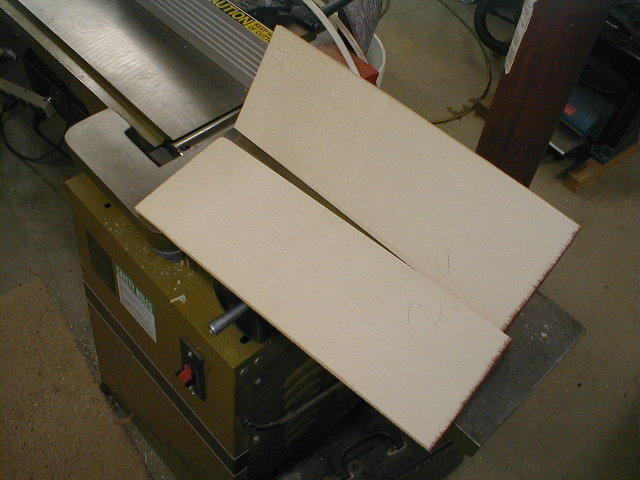
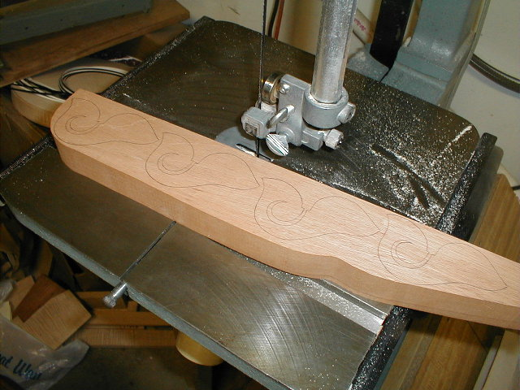

←
12345678910111213
→
Preparing the wood, Jointing the plates, Shaping the plates, Cutting the blocks, bending the sides, Cutting the pearl, Using the mould.
- 1) Here's the board Chris' mandolin back came from. I have several boards from the same log. We initially selected a piece from about 2/3's of the way up the board, but after cutting it to size and planing it, there was an area near the end of the board that had even nicer figure. This wood came from some good friends in southern Indiana. It is red maple.
- 2) Here's the back after planing and joining. I'm applying a high gram strength hide glue before clamping it in the gluing fixture.
- 3) I had to build a fixture to hold the backs and tops while the clamps are applied as much of the wood is wedge shaped. If it weren't for the fixture, it would want to "buckle" under the pressure of the clamps, causing a bad glue joint.
- 
- 4) Here are the two halves of the Englemann top. This is from the same tree as #5 was built. I'm preparing to joint the edge prior to gluing.
- 5) The tops come in a book matched wedge. They are glued together and then the challenge of getting the "inside" surface perfectly flat starts. Since my joiner is onlt 6" wide, I've devised a way of tack gluing a couple of sacrificial rails to the top surface, running it thru my thickness sander to get them even, then flipping the whole thing over and sanding the joining surface of the top perfectly flat. I take several passes, rotating the wood 45 degrees between each pass.
- 6) Here I am sitting at the duplicator roughing out the back. I have hand carved forms for the top and back, inside and out. It's a messy, noisy job.
- 7) Here you can see my pattern on the right and Chris' mando back on the left after the intial cut. It takes several passes and about 1 1/2 hours to rough it out. An aluminum stylus follows the pattern and the router on the left cuts the top/back.
- 8) I hand cut all my pearl/abalone with the exception of the logo, which is a pain to cut!!! Oh, for a simple last name. Here's I'm cutting the base of a traditional flowerpot from abalone.
- 
- 9) Several headblocks are layed out on some 1 3/8" thick mahogany. I'll cut them on the bandsaw.
- 9b) Making kerfed linging is a slow and tedious job. It's made from basswood. There's a fixture on the bandsaw, just outside the picture, that stops the cut before it goes thru the lining. Doesn't take that long to make.
- 10)The sides are thinned to about 0.065" and bent over a hot pipe. I've got a thin piece of galvanized sheet metal with a couple of handles attached to back the wood as I bend it. This helps make the bend and minimizes the chance of fractures as I bend. I mist water on the wood about 10 minutes before I start bending. I keep a spray bottle handy to keep the wood wet. Always use distilled water to avoid mineral spots on light colored woods like maple.
- 11) As the sides are bent, they are clamped in the form to dry.
- 12) Here's the entire rim in the form.
- 13) The end of the "long side" extends from the scroll around to the lower point. This side tucks in behind the lower point and is tapered so it blends in with the side between the points.
←
12345678910111213
→
© Lynn Dudenbostel, 2002.